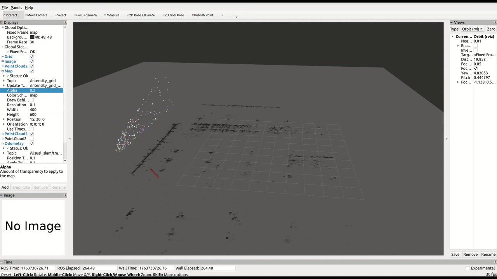

9) Map building for NAV2
To perform autonomous navigation, you can either build a 2D occupancy grid using the ToF camera mounted on the robot, or use the ad_r1m_pointcloud_to_occupancygrid package to convert the 3D pointcloud generated by cuVSLAM into a 2D occupancy grid required by NAV2.
To convert a point cloud into an occupancy grid, run the build_occupancy_grid.launch.py launch file:
ros2 launch ad_r1m_pointcloud_to_occupancygrid build_occupancy_grid.launch.py topic:=/visual_slam/vis/landmarks_cloud
The pointcloud resulted as an output from the cuVSLAM can be noisy or include ground points which, for a reliable navigation map, should be filtered. To enable pointcloud filtering before map building set the filter_enable parameter in build_occupancy_grid.launch.py. You can also enable/disable each individual filter to achieve an accurate occupancy grid, depending on the available pointcloud:
{'filter_enable': True}, # Global filtering enable
{'ror_enable': True}, # Radius outlier removal enable
{'sor_enable': False}, # Statistical outlier removal
{'pass_enable': True}, # Pass through filter (z-band)
{'voxel_enable': True}, # Voxel grid enable
{'cluster_enable': False}, # Filtering using clusters
This package allows optional averaging of consecutive grid maps to improve map quality when using noisy or incomplete point clouds, such as cuVSLAM landmarks. By averaging multiple frames, random sensor noise is reduced, persistent structures become clearer, and short-lived or unstable points are suppressed.
# Normal mean averaging of maps
{'normal_averaging_enable': True},
# Moving average parameters
{'moving_average_enable': False},
{'ma_alpha': 0.5},
Warning
If both normal_averaging_enable and moving_average_enable are true, only normal averaging will be applied.
Important
When filter_enable is True, a Gaussian Z-probability weighting is applied based on how close its height is to the robot’s “obstacle-relevant” vertical band. Set the Gaussian mean to roughly the robot’s mid-height and the standard deviation to about half the robot’s height. Points within this band receive higher weight, while very low or very high points are suppressed, helping reduce vertical noise and emphasize likely obstacles.
{'gaussian_mean': 0.2},
{'gaussian_stddev': 0.05},
{kind=link}

Saving the occupancy grid
Once the occupancy grid has been built, save it using the Nav2 map saver. The -t flag specifies the topic to subscribe to, and save_map_timeout sets how long to wait for a map message:
ros2 run nav2_map_server map_saver_cli -f /ros_data/cuvslam_map_grid -t intensity_grid --ros-args -p save_map_timeout:=20.0
Tip
During the timeout period, you may need to move the robot slightly so that cuVSLAM generates a new landmark message. This triggers a new occupancy grid message that map_saver can capture. If the robot remains stationary and no new landmarks are published, the saver may time out without saving.
Post-processing the saved map
The .pgm file generated from cuVSLAM landmarks is rotated by approximately 180 degrees. Before using the map with Nav2, rotate the image:
convert /ros_data/cuvslam_map_grid.pgm -rotate 180 /ros_data/cuvslam_map_grid.pgm
The map .yaml file may also need adjustments. Because cuVSLAM produces a sparse pointcloud, the resulting occupancy percentages in the grid can be low. Consider tuning:
occupied_thresh— lower this value to detect cells with lower occupancy as obstaclesfree_thresh— adjust to match the actual occupancy distribution in the sparse maporigin— verify the [x, y, theta] values match the rotated map
Key parameters for cuVSLAM-based maps
The intensity_factor parameter is critical when building occupancy grids from cuVSLAM landmarks. A lower value (e.g. 0.3) prevents the sparse pointcloud from saturating the grid with noisy points, while a higher value (e.g. 1.0) is more appropriate for dense LiDAR data.
{'intensity_factor': 0.3}, # lower for sparse cuVSLAM pointclouds
For a complete list of parameters and configuration options, see the ad_r1m_pointcloud_to_occupancygrid README.